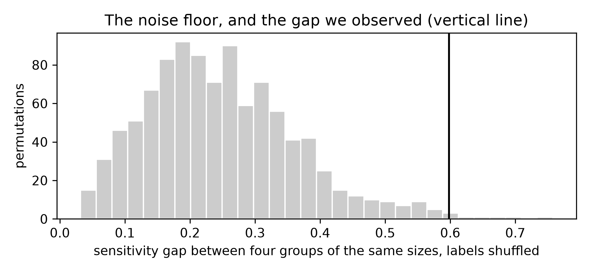

ImportantA suggested addition, not part of the original module
This exercise was proposed and drafted by the assistant that rebuilt the booklet, not ported from an earlier version of the module. Exercise 1.2 Task 3 asked where a model is wrong; the question a service has to answer is for whom. The booklet measures performance on everyone at once and never splits it. Treat it as a draft to accept, rewrite or delete: nothing else depends on it, and removing it means deleting this file and its line in _quarto.yml.
Every cell on this page is a real R or Python cell, run against data/diabetes.csv with the Day 5.4 split.
25.1 Objectives
Compute sensitivity, specificity and AUC inside subgroups of a test set, and report each one beside the number of rows and the number of cases it rests on.
Build a noise floor for a between-group gap by permuting the group labels, and say whether an observed gap clears it.
Explain why the group a subgroup table flags as worst served is usually the smallest one, and name what you would need to measure a real disparity.
25.2 Why this, here
Chapter 22, Chapter 23 and Chapter 24 asked which variables the model used. None of them asked who the model works for. Every metric in this booklet — Chapter 18’ AUC, Chapter 15’ sensitivity, Chapter 20’s comparison table — has been computed on all 231 test rows at once, and a single number over 231 people is an average over people who are not interchangeable. Chapter 2 asked where the model is wrong. A service has to answer a harder version: for whom. This exercise splits the test set and asks that question, and then spends most of its time on whether the answer means anything.
25.3 Worked example — one model, scored on everyone
We audit the random forest of Chapter 20 rather than the logistic regression of Chapter 14, for one reason: it is the model Day 9 has spent all day explaining, and an equity audit in practice arrives after the explanation, on the model somebody is proposing to deploy. Nothing in the method depends on that choice — Stretch 1 repeats the whole page on the logistic regression, and the interesting question is whether the two models fail the same people.
library(tidymodels); library(readr); library(dplyr); library(ggplot2)diabetes <-read_csv("data/diabetes.csv") |>mutate(diabetes =factor(diabetes, levels =c("pos", "neg")))set.seed(123)split <-initial_split(diabetes, prop =0.7, strata = diabetes)train <-training(split); test <-testing(split)rf_fit <-rand_forest(trees =500) |>set_engine("ranger", seed =123) |>set_mode("classification") |>fit(diabetes ~ ., data = train)pred <-augment(rf_fit, test)# every metric in one place, and the two counts that have to travel with themmetrics_in <-function(d) {tibble(n =nrow(d),cases =sum(d$diabetes =="pos"),sens =if (any(d$diabetes =="pos")) sens_vec(d$diabetes, d$.pred_class) elseNA_real_,spec =if (any(d$diabetes =="neg")) spec_vec(d$diabetes, d$.pred_class) elseNA_real_,auc =if (n_distinct(d$diabetes) ==2) roc_auc_vec(d$diabetes, d$.pred_pos) elseNA_real_)}by_group <-function(d, col) { d |>group_by(group = .data[[col]]) |>group_modify(~metrics_in(.x)) |>ungroup()}metrics_in(pred)
#> # A tibble: 1 × 5
#> n cases sens spec auc
#> <int> <int> <dbl> <dbl> <dbl>
#> 1 231 84 0.536 0.850 0.824
import pandas as pd, numpy as npimport matplotlib.pyplot as pltfrom sklearn.model_selection import train_test_splitfrom sklearn.ensemble import RandomForestClassifierfrom sklearn.metrics import recall_score, roc_auc_scorediabetes = pd.read_csv("data/diabetes.csv")X = diabetes.drop(columns="diabetes")y = (diabetes["diabetes"] =="pos").astype(int)X_tr, X_te, y_tr, y_te = train_test_split(X, y, test_size=0.3, random_state=123, stratify=y)rf_fit = RandomForestClassifier(n_estimators=500, random_state=123).fit(X_tr, y_tr)pred = X_te.copy()pred["truth"] = y_tepred["pred"] = rf_fit.predict(X_te)pred["prob"] = rf_fit.predict_proba(X_te)[:, 1]# every metric in one place, and the two counts that have to travel with themdef metrics_in(d): t, yhat, p = d["truth"].values, d["pred"].values, d["prob"].valuesreturn pd.Series({"n": len(t), "cases": int(t.sum()),"sens": recall_score(t, yhat) if t.sum() else np.nan,"spec": recall_score(1- t, 1- yhat) if (1- t).sum() else np.nan,"auc": roc_auc_score(t, p) if0< t.sum() <len(t) else np.nan})def by_group(d, col):return pd.DataFrame({g: metrics_in(sub)for g, sub in d.groupby(col, observed=True)}).Tmetrics_in(pred).round(3)
#> n 231.000
#> cases 84.000
#> sens 0.631
#> spec 0.748
#> auc 0.768
#> dtype: float64
One row, 231 patients, 84 of them with diabetes. R’s split gives a sensitivity of 0.54 and an AUC of 0.82; Python’s gives 0.63 and 0.77. That row is the only performance statement the booklet has made so far, and a commissioner reading it has no way to tell whether it describes everybody equally.
Notecases, not just n
metrics_in() returns two counts, and the second one is the one people forget. Sensitivity is computed only on the patients who have the disease, so a group of 63 women containing 8 cases gives you a sensitivity estimated from 8 observations, however reassuring the 63 looks in the table.
25.4 Task 1 — Split the test set, and report the gap
Cut the test set two ways — by age band and by number of pregnancies — and compute the three metrics inside each band. Report, for each grouping, the distance between the best and the worst group, with the group sizes beside it.
Both languages have one function that turns a numeric column into bands with labels you choose; in R it is base, in Python it lives in pandas. The gap is the range of a column, so max() and min() are all you need — and if your answer comes back as a missing value, one band had only one class in it, which check_metric_range() will tell you by failing.
The age table is the kind of table that gets into a slide deck. In R the 40–49 band has a sensitivity of 0.73 against 0.46 for the under-30s; in Python the over-50s sit at 0.46 against 0.82 for the 40–49s. Before reading anything into either, look at the n and cases columns.
25.5 Task 2 — How large a gap does chance produce?
The honest question is not whether the groups differ. With four groups and 231 rows they will always differ. The question is whether they differ by more than they would if there were nothing to find.
Build the comparison the only way that needs no assumptions: shuffle the band labels among the test rows, so the groups keep their sizes and lose their meaning, recompute the gap, and do it a thousand times. That distribution is the noise floor.
# Replace every ______ below, then run this cell.source("checks/checks.R")set.seed(123)null_gaps <-replicate(1000, { shuffled <- pred |>mutate(age_band =______(age_band)) g <-by_group(shuffled, "age_band")max(g$sens) -min(g$sens)})round(quantile(null_gaps, c(0.5, 0.95)), 3)check_gap_vs_noise(______, null_gaps, "sensitivity gap across age bands")
# Replace every ______ below, then run this cell.import sys; sys.path.append("checks")from checks import*rng = np.random.default_rng(123)shuffled, null_gaps = pred.copy(), []for _ inrange(1000): shuffled["age_band"] = rng.______(pred["age_band"].values) g = by_group(shuffled, "age_band") null_gaps.append(g["sens"].max() - g["sens"].min())null_gaps = np.array(null_gaps)print(np.quantile(null_gaps, [0.5, 0.95]).round(3))check_gap_vs_noise(______, null_gaps, "sensitivity gap across age bands")
TipStuck?
Shuffling a column is one function call: in R it is the same function you use to draw a sample, called with no size argument; in Python it is a method of the random generator you have already created. Nothing else in the loop changes.
A [fix] from check_gap_vs_noise() is a result, not a bug. Read its detail line before you touch the code.
check_gap_vs_noise() reports the observed gap, the median of the permuted gaps, their 95th centile and a permutation p-value. For the age bands it fails, in both languages: the gap in sensitivity across age is 0.28 in R against a median permuted gap of 0.28, and 0.36 in Python against a median of 0.26. Made-up groups of the same sizes produce a gap this large about half the time in R and about a fifth of the time in Python.
25.6 A second grouping, where the answer is different
Run the same two steps on the pregnancy bands. This is a worked example, not a task: the code is Task 1’s and Task 2’s with one column name changed, so it is written out here in full.
gap_preg <-max(by_preg$sens) -min(by_preg$sens)set.seed(123)null_preg <-replicate(1000, { g <-by_group(mutate(preg, preg_band =sample(preg_band)), "preg_band")max(g$sens) -min(g$sens)})check_gap_vs_noise(gap_preg, null_preg, "sensitivity gap across pregnancy bands")
#> [ok] sensitivity gap across pregnancy bands is larger than the gap chance alone produces (observed 0.536, median null 0.242, 95th centile 0.458, p = 0.026 (1000 permutations))
ggplot(tibble(gap = null_preg), aes(gap)) +geom_histogram(bins =30, fill ="grey80", colour ="white") +geom_vline(xintercept = gap_preg, linewidth =1) +labs(x ="sensitivity gap between four groups of the same sizes, labels shuffled",y ="permutations",title ="The noise floor, and the gap we observed (vertical line)")
#> [ok] sensitivity gap across pregnancy bands is larger than the gap chance alone produces (observed 0.598, median null 0.233, 95th centile 0.465, p = 0.009 (1000 permutations))
#> 0.008991008991008992
#> <matplotlib.lines.Line2D object at 0x321367a50>
ax.set_xlabel("sensitivity gap between four groups of the same sizes, labels shuffled")
#> Text(0.5, 0, 'sensitivity gap between four groups of the same sizes, labels shuffled')
ax.set_ylabel("permutations")
#> Text(0, 0.5, 'permutations')
ax.set_title("The noise floor, and the gap we observed (vertical line)")
#> Text(0.5, 1.0, 'The noise floor, and the gap we observed (vertical line)')
fig.tight_layout()

This one clears the floor: a gap of 0.54 in R against a 95th centile of 0.46 (p = 0.03), and 0.60 in Python against 0.47 (p = 0.01). Hold on to it until the end of the page, because the group driving it is the one with six or eight cases in it.
25.7 Task 3 — Put an interval on every group
A p-value for the gap does not tell a service how good the model is for the over-50s. For that you need an interval around each group’s own estimate. Resample the rows within a band, with replacement, recompute sensitivity, and take the 2.5th and 97.5th centiles.
# Replace every ______ below, then run this cell.boot_sens <-function(d, B =1000) { v <-replicate(B, { i <-sample(nrow(d), replace = ______)if (any(d$diabetes[i] =="pos")) sens_vec(d$diabetes[i], d$.pred_class[i]) elseNA_real_ })quantile(v, c(0.025, ______), na.rm =TRUE)}set.seed(123)intervals <-lapply(levels(pred$age_band), function(g) { d <- dplyr::filter(pred, age_band == g) ci <-boot_sens(d)tibble(group = g, n =nrow(d), cases =sum(d$diabetes =="pos"),sens =sens_vec(d$diabetes, d$.pred_class),lo = ci[[1]], hi = ci[[2]], width = ci[[2]] - ci[[1]])}) |>bind_rows()intervalscat("widest interval:", intervals$group[which.max(intervals$width)],"| smallest band:", intervals$group[which.min(intervals$n)],"| lowest AUC:", as.character(by_age$group[which.min(by_age$auc)]), "\n")
# Replace every ______ below, then run this cell.def boot_sens(d, rng, B=1000): t, yhat = d["truth"].values, d["pred"].values v = [recall_score(t[i], yhat[i]) if t[i].sum() else np.nanfor i in (rng.integers(0, len(d), ______) for _ inrange(B))]return np.nanquantile(v, [0.025, ______])rng = np.random.default_rng(123)rows = []for g, d in pred.groupby("age_band", observed=True): lo, hi = boot_sens(d, rng) rows.append({"group": g, "n": len(d), "cases": int(d["truth"].sum()),"sens": recall_score(d["truth"], d["pred"]),"lo": lo, "hi": hi, "width": hi - lo})intervals = pd.DataFrame(rows)print(intervals.round(3))print("widest interval:", intervals.loc[intervals["width"].idxmax(), "group"],"| smallest band:", intervals.loc[intervals["n"].idxmin(), "group"],"| lowest AUC:", by_age["auc"].idxmin())
TipStuck?
A bootstrap resample is the same size as the group it came from, drawn with replacement — that is the whole idea, and it is one argument in R and one argument in Python. The upper centile is whatever makes the interval symmetric around 95%.
25.8 The result that should bother you
The over-50s are the worst-served group in this test set. In R their AUC of 0.73 is the lowest of the four bands; in Python their AUC of 0.45 is the lowest of the four and below chance, which would mean the forest is worse than a coin for women over 50. They are also the band a service would most want to get right.
Three steps.
The over-50s band has 19 rows in R and 23 in Python, of which 11 are cases in both. It is the smallest band, it has the widest bootstrap interval of the four — 0.33 to 0.90 in R, 0.17 to 0.75 in Python — and the width of that interval, around 0.57 to 0.58, is larger than the entire gap between the best and worst band that we set out to interpret. The smallest group gets the most extreme point estimate because it has the fewest cases to average over, and the same thinness is what makes the estimate extreme and what makes it uncertain.
The direction is not stable either. The same band, the same model specification, the same seed: in R the over-50s have a sensitivity of 0.64, above the overall 0.54, and in Python 0.46, below the overall 0.63. The only difference between the two is which rows landed in the test set. A worst-served group that changes places when you reshuffle the split is a property of the split.
Permuting the labels says the same thing without any of the interpretation. Four made-up age bands of the same sizes produce a sensitivity gap of 0.28 or more in half of a thousand permutations, and the observed gap is 0.28. A difference smaller than the noise floor is not a finding, and ranking the bands by sensitivity is then an elaborate way of ranking them by size.
The pregnancy grouping is the useful counter-case, and it is only half a counter-case. That gap does clear the floor (p = 0.03 in R, p = 0.01 in Python), so something there is not chance. Then look at which band is driving it: the women with one or two pregnancies, sensitivity 0.25 in R and 0.17 in Python — estimated from 8 cases and 6 cases respectively, inside a group of 63 and 57 rows. Repeat Task 3 on the pregnancy bands and that band’s interval runs from 0.00 upwards. So even the gap that survives the permutation test rests on single-digit event counts, and we have looked at six gaps on this page — two groupings by three metrics — while testing two of them. A p-value of 0.03 is not a licence when the search was that wide.
25.9 What this cannot be evidence of
ImportantThe method is real; the finding is not
A subgroup gap measured on 231 test rows of a teaching extract is not evidence about any service. The smallest age band here holds eleven cases — few enough that a gap of the size you are about to find can be produced by chance alone — and no sentence of the form “the model under-serves group X” can be carried out of this chapter.
That is not a reason to skip the exercise; it is the exercise. Someone auditing a deployed model for equity has to be able to tell a disparity from an artefact of the data they were handed, and the only way to practise is on data where you already know the answer. What you would need to make a real claim is nameable: data from the service you are auditing, with the subgroup actually recorded rather than inferred; a list of subgroups written down before anyone looks at a metric; and enough cases in each of them — events, not rows — that the interval is narrower than the difference you would act on. On this page the third condition fails by a factor of several for every band.
25.10 Reflection
Your service wants a dashboard with one sensitivity per age band. Write the sentence you would put under the table so that a reader cannot misread a small group as a failing one. It should be a sentence, not a number.
Where does the list of subgroups come from? You cannot search the data for the grouping with the largest gap and then report that gap — explain why not, and say who should decide the list instead.
Suppose the over-50s disparity were real. Name two responses a service could make that are not “retrain the model”, and say what evidence would tell you which to choose.
25.11 Stretch
NoteStretch 1 — Do the two models fail the same people?
Repeat the whole page on the logistic regression of Chapter 14, fitted to the same training rows. Put its subgroup table next to the forest’s. If the two models disagree about which band is worst served, what does that tell you about the disparity — and what would it take for them to agree for the right reason rather than by chance?
NoteStretch 2 — How many cases would you need?
Keep the model and simulate the audit you wish you could run. Draw groups of 25, 50, 100 and 400 cases by resampling the test set, and record how often a true sensitivity difference of 0.10 between two groups is detectable at all. The answer tells you the minimum size of a subgroup worth reporting, and it is larger than anything on this page.
NoteStretch 3 — A threshold per group
Chapter 15 chose one threshold for everybody. Choose one per age band so that every band reaches the same sensitivity, and report what it costs in specificity and in extra referrals. Then write the paragraph you would have to put in front of a clinical governance committee to justify applying a different rule to patients of different ages.
25.12 What you can and cannot now claim
Can: that you can compute a model’s performance inside subgroups of a test set, report each estimate with the number of cases behind it and a bootstrap interval around it, and build a permutation noise floor that says whether a between-group gap is larger than chance produces. That is the whole machinery of a fairness audit’s measurement step, and it is not difficult.
Cannot: that this model under-serves anybody. The test set has 231 rows, the smallest band has 11 cases, and the one gap that cleared the noise floor was driven by a group with six. What you have practised is the arithmetic and the discipline of reporting it; the claim itself needs a service’s own data, a prespecified subgroup list and event counts an order of magnitude larger. An estimate reported without uncertainty is not an estimate — the same point this page makes about people rather than about variables.